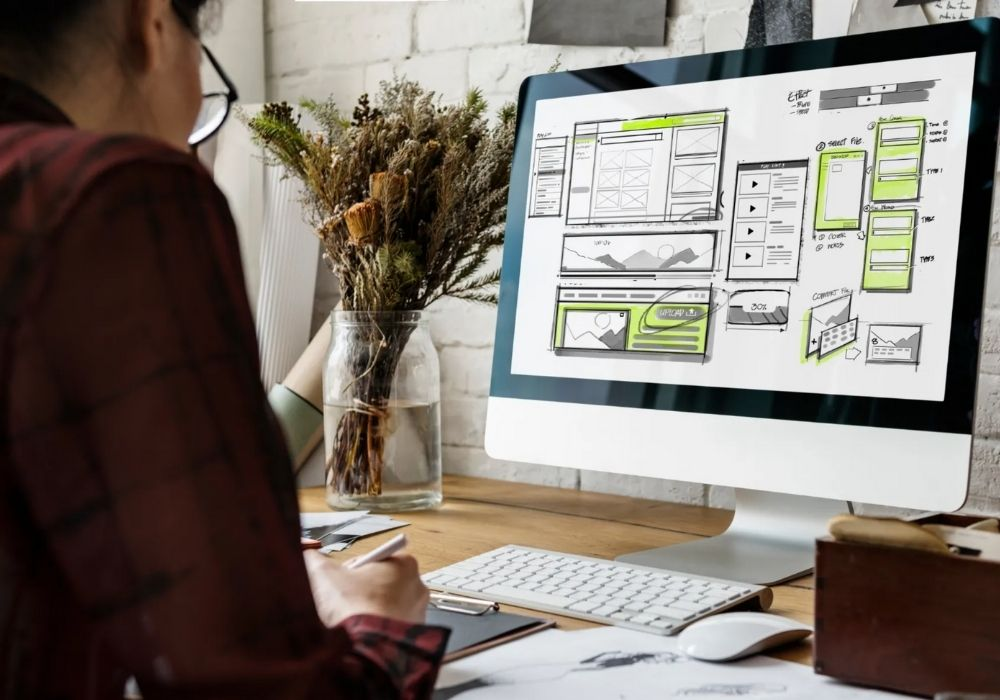

Nossos estudantes são protagonistas do próprio aprendizado. Através de projetos práticos e significativos, desenvolvem habilidades técnicas, criativas e socioemocionais que os preparam para os desafios do século XXI. Conheça os trabalhos que estão fazendo a diferença!
Todos os alunos da EMEF Newton Reis podem participar dos projetos extracurriculares. Desenvolva suas habilidades, faça novos amigos e transforme suas ideias em realidade!